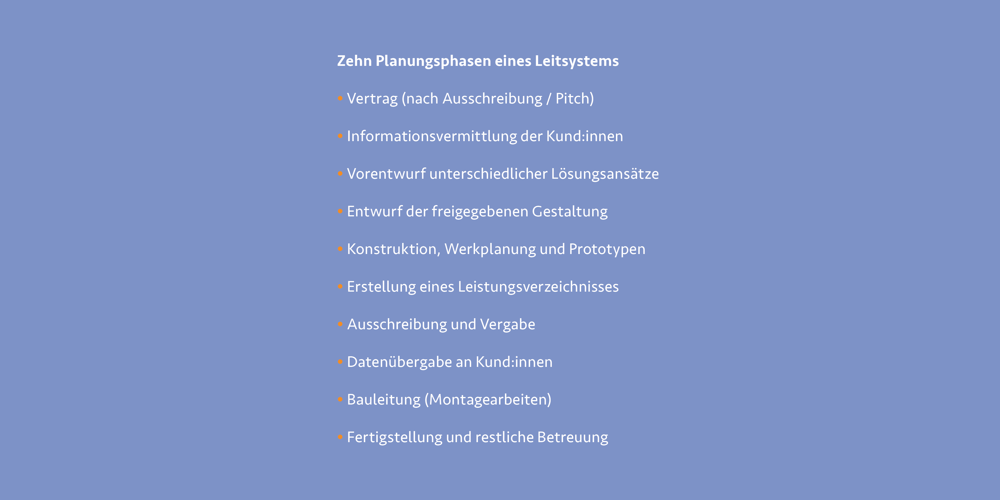
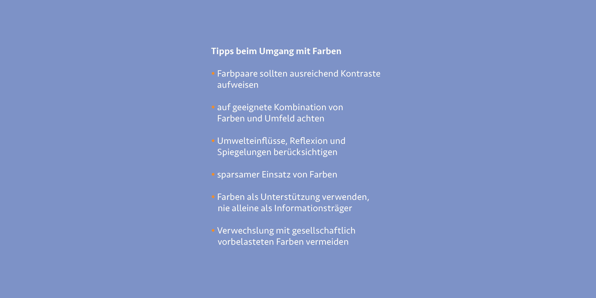
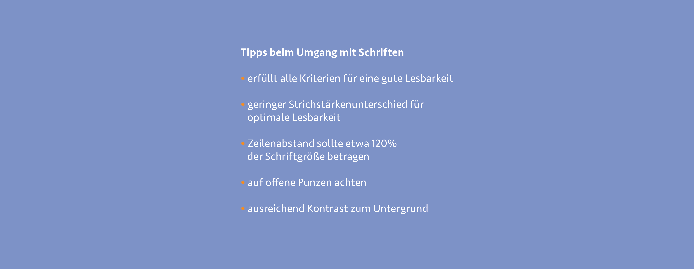

Orientierung befähigt Menschen, sich in neuen Umgebungen zurechtzufinden. Dies betrifft jedoch nicht nur die räumliche Orientierung, sondern auch zeitliche, kulturelle und sexuelle Orientierung. Fehlt uns das Wissen über unser gegenwärtiges Umfeld, kann dies Angst und Hilflosigkeit hervorrufen. Besonders in einer neuen geografischen Umgebung muss zunächst Vertrauen in diese Umgebung gewonnen werden, um ein Gefühl der Sicherheit zu entwickeln.
Leit- und Orientierungssysteme sollen dabei helfen, Ängste abzubauen, indem sie uns auf übersichtliche und möglichst einfache Weise zu unseren gewünschten Zielorten führen. Hierbei können verschiedene Methoden und Ansätze zur Anwendung kommen. Aufgrund der sich ständig verändernden Umgebungen und teilweise komplexen Architekturen sind Leitelemente erforderlich, um sich sicher orientieren zu können. Unsere zunehmend hektische Umgebung zwingt uns dazu, immer zeiteffizientere Orientierungswege zu finden. Allerdings sind nicht alle Leitsysteme auf eine möglichst zeitsparende Zielfindung ausgelegt. In Museen oder Kultureinrichtungen beispielsweise werden häufig Leitelemente eingesetzt, die spielerischer und kreativer mit der Zielführung umgehen und es Besucher:innen ermöglichen das Gebäude selbst zu erkunden und erfahren.
In manchen Situationen kann eine schnelle Orientierung jedoch lebensnotwendig sein. Besonders in Gesundheitseinrichtungen kann ein durchdachtes Leitsystem lebensrettend sein, wobei die einfache und klare Führung zum Ziel im Vordergrund steht. Der Aufenthalt in solchen Einrichtungen ist oft mit negativen Gefühlen verbunden, da man sie meist aufgrund gesundheitlicher Beschwerden, zum Besuch einer erkrankten Person oder wegen beruflicher Verpflichtungen aufsucht. Ein positives Leitsystem kann die Angst vor Orientierungslosigkeit mindern und das Besuchserlebnis deutlich angenehmer gestalten. 1
Projektphasen eines Leitsystems
Die Umsetzung eines Leit- und Orientierungssystems unterliegt natürlich, wie so vieles im Design, gewissen gestalterischen Regeln und Abläufen. So hat sich zum Beispiel die Einteilung eines solchen Projektes in verschiedene Phasen bewährt. Die gängigen Modelle teilen sich oft in acht bis zehn Phasen ein und berücksichtigen alle nötigen Bereiche der Planung, Gestaltung, Umsetzung bis hin zur weiteren Instandhaltung des Projektes. In meiner Arbeit werde ich mich nicht auf alle Phasen beziehen können, allerdings sollte es kein Problem darstellen, die Modelle in externen Quellen nachzuschlagen. In den Werken von Andeas Uebele 2 und Per Mollerup 3 finden sich detaillierte Analysen und Auflistungen der hier angerissenen Phasen.
Um ein Gebäude, eine Einrichtung oder einen Außenraum zu erfassen, ist es notwendig, sich einen Überblick über die jeweilig vorliegende Lage zu machen. Dabei helfen architektonische Grundrisse, Luftaufnahmen, sowie eine persönliche Begehung mit Dokumentation der vorhandenen Schilder und Leitelemente. Zu empfehlen ist eine Begehung mit den verantwortlichen Parteien des Projektes oder der Architekt:in selbst. Diese können oft hilfreiche Hinweise über die Konzeption und Nutzung der Räumlichkeiten und Areale geben, die möglicherweise nicht direkt ersichtlich sind.
Mit dem so erlangten Wissen wird eine Verortung des Geländes vorgenommen. Alle vorhandenen Informationen sowie Schildtypen werden in den Grundriss oder einem zur weiteren Planung essentiell wichtigen Plan eingetragen. Dies dient als Grundlage für die folgende Arbeit. Befinden sich alle Details im Grundriss, wird über mögliche Herangehensweisen des Leitsystems gesprochen. Nicht jedes Leitsystem kann in gleichem Maße oder Umfang auf andere Anwendungsbereiche übernommen werden. Das hängt von der Tätigkeit und dem Einsatzgebiet des Geländes ab. Krankenhäuser weisen zum Beispiel ein völlig anderes Tätigkeitsfeld als öffentliche oder kulturelle Einrichtungen auf. Auch in Bürooder Wohnflächen stehen andere Bedürfnisse im Vordergrund. Nach Einordnung des Tätigkeitsfelds werden die Nutzer:innen des Areals untersucht und wichtige Fragen geklärt. Welche Bedürfnisse stehen bei ihnen im Vordergrund? Gibt es Besonderheiten, auf die das Augenmerk gelegt werden soll? Sind viele Nutzer:innen mehrsprachig und benötigen Informationen in anderen Sprachen? Gibt es möglicherweise Unterscheidungen zwischen dauerhaften und temporären Nutzenden wie zum Beispiel Lieferant:innen? Sind diese Fragen geklärt, werden die Informationen in Hierarchien und damit auch Wichtigkeiten eingeteilt. Dabei können verschiedene Gruppen, je nach Relevanz und Tätigkeitsbereich, unterschiedliche Informationen erhalten. Danach folgt die Wahl der Typografie, des Satzspiegels, der Farbe, der Piktogrammfamilie und der Materialien, die zur Verwendung stehen. In diesem Schritt sind selbstverständlich auch die Planung von taktilen Elementen, Bodenindikatoren und barrierefreien Maßnahmen zu berücksichtigen. Wird das erarbeitete Konzept von den Architekt:innen und Auftraggeber:innen für gut empfunden und freigegeben, kann nun zum Entwurf übergegangen werden.
In der Entwurfsphase wird das erarbeitete Konzept auf alle nötigen Schilder und Leitelemente angewandt und überprüft. Mit Prototypen wird die Wirksamkeit vor Ort getestet. Außerdem spielt die Konstruktion in diesem Abschnitt eine besonders wichtige Rolle. Für jedes Element, welches an Wänden oder im Boden montiert werden soll, müssen Konstruktionszeichnungen erstellt werden. Im späteren Verlauf des Projektes dienen diese den beauftragten Firmen als Orientierung zur Herstellung der Inhaltselemente. Besonders bei individuellen Lösungen liefern die Zeichnungen essentielle Hinweise.
Nach der Vergabe an meist externe Firmen werden die Elemente produziert und in den festgelegten Standorten auf dem Areal endgültig montiert. Der Auftrag endet mit der finalen Mängelbeseitigung und, falls beauftragt, der Dokumentation des Projektes.

Bei der Konzeption und Planung eines Leit- und Orientierungssystems gibt es grundlegende Richtlinien und Regeln, die sich in den letzten Jahrzehnten als bewährte Parameter etabliert haben. Sie geben allerdings nur eine grobe Richtlinie vor, an der man sich während des Projektes orientieren kann, sich aber nicht zwingend halten muss. Jedes Leitsystem ist individuell, wodurch eine ständige Anpassung der Parameter von Nöten ist. Dabei sind Faktoren wie das Einsatzgebiet, die Zielgruppe oder der Zweck richtungsweisende Angaben, an denen die Parameter ausgerichtet werden müssen.
Um den Umfang meiner Theoriearbeit nicht künstlich zu erweitern, werde ich die einzelnen Stationen nur grob erläutern. Da jedes Leitsystem eine individuelle Planung benötigt, kann hier nicht auf jeden Einzelfall eingegangen werden. Dennoch werden die essentiellen Aspekte, die bei der Umsetzung eines solchen Projektes von entscheidender Relevanz sind beschrieben.
Einsatz von Farbe
In vielen Fällen sind Farben als visuelles Ausdrucksmittel in Leitund Orientierungssystemen zu finden. Mit Farben lassen sich Einsatzbereiche und Elemente hervorheben, die besonders wichtig sind. Farben können auch erlernt werden. In Deutschland sind wir es gewohnt, dass Fluchtwege in Gebäuden stets mit weißen Piktogrammen auf grünem Grund gekennzeichnet sind. Auch Autobahn- und Straßenschilder im Straßenverkehr sind durch ihre festgelegten Farben und Formen auch in Bruchteilen von Sekunden gut zu erkennen. Diese gelernten Techniken kann man sich bei der Gestaltung von Leitsystemen natürlich zu Nutze machen. Ist ein Leitsystem allerdings derart mit Farben überfrachtet, kann es schnell unübersichtlich werden und erarbeitete Hierarchien lösen sich in Luft auf. Auch der alleinige Einsatz von Farben als Orientierungsmittel ist ungeeignet. Besser ist die Unterstützung von Farbe als zusätzliche und unterstützende Sinneswahrnehmung.
Hier wird auf das Zwei-Sinne-Prinzip verwiesen, welches den Einsatz von mehreren Sinnen zur eindeutigen Vermittlung von Informationen vorsieht. Somit können Informationen auch von Menschen aufgenommen werden, bei denen nicht alle Sinne gleichermaßen ausgeprägt sind. Doch Farben dienen nicht nur als optische Blickfänger, oder der visuellen Hervorhebung von Information, sie sollen den Nutzer:innen mehr Klarheit und Überblick verschaffen.
Beim Thema Farbe sollte immer auch die inklusive Gestaltung für sehbeeinträchtigte und farbfehlsichtige Personen mitbedacht werden. Jeder Mensch nimmt Farben unterschiedlich war, doch gibt es für einige Menschen deutliche Abweichungen gegenüber der allgemeinen Norm, oder sie können die Unterschiede zwischen einzelnen Farben nicht wahrnehmen. Bei der Planung ist also die Berechnung des Leuchtdichtekontrastes zu prüfen, um solche Verwechslungen oder Irritationen beim fertigen System zu vermeiden. In diesem Zusammenhang sind außerdem die zu verwendenden Materialien und Untergründe zu prüfen. Diese müssen auf Reflexionen und Blickwinkel der Betrachter:innen getestet werden, um spätere ungewollte Überraschungen wie starke Reflexionen oder Spiegelungen zu verhindern.

Einsatz von Schrift
Typografie kann die Erscheinung, den Auftritt und die Ausstrahlung eines Ortes unterstützen. Eine sorgfältige Auswahl der Typografie ist daher ein wesentlicher Bestandteil eines jeden Gestaltungsprozesses. Dabei ist Schrift allerdings nicht gleich Schrift. Für den Einsatz in einem Leit- und Orientierungssystem herrschen mitunter andere Vorgaben, wie für ein Werbeprodukt des benachbarten Restaurants. Zum einen soll Typografie den Charakter und Charme des Gebäudes oder der Anlage wiedergeben. Zum anderen muss sie Vorgaben zur Lesbarkeit, Barrierefreiheit und einwandfreien Handhabung erfüllen. Aus diesen Gründen ist der Einsatzbereich der Elemente und der Schrift maßgeblich an der Wahl der Typografie beteiligt. Sind für das Leitsystem nur kurze Begriffe und Zielangaben auf Wegweisern erforderlich, so fällt die Wahl der Typografie eventuell auf eine andere, als wenn ganze Fließtexte und Informationsmaterial damit bestückt werden müssen. Auch die zeitliche Erfassung der Informationen kann eine direkte Auswirkung auf die Schriftwahl haben. Müssen Informationen schnell erfasst werden, wie in der Notaufnahme eines Krankenhauses, setzt man auf eine klare Typografie, wobei wiederum in einem Schlosspark kein Zeitdruck vorliegt und es dort auch eine etwas verspieltere Typografie sein kann. Die Lesbarkeit ist allerdings in allen Situationen wichtig.
Die Wahl der Schriftart steht oft an erster Stelle des Entscheidungsprozesses. Dabei gilt es vor allem die Erkennbarkeit, Unterscheidbarkeit und Offenheit einer Schrift zu untersuchen. Die Erkennbarkeit sollte möglichst eindeutig sein, damit Texte schnell und einfach aufgenommen werden können. Eine gute Unterscheidbarkeit stellt die schnelle Erfassung einzelner Buchstaben her. Dabei sollte darauf geachtet werden, dass die ausgewählte Schrift möglichst wenig ähnliche Formen der einzelnen Buchstaben aufweist. Eine konstruierte serifenlose Schrift weist diese Merkmale leider oft nicht auf und sollte durch eine humanistische Schrift ausgetauscht werden. Schriften mit offenen Punzen können durch ihre deutlichere Unterscheidbarkeit der Buchstaben auch von Personen mit Sehbeeinträchtigungen besser wahrgenommen werden. Auch Strichstärkenkontraste sind bei der Wahl einer geeigneten Schrift zu beachten. Weisen diese hohe Kontraste auf, kann das durch den Druck, schwachen Kontrast oder einer Überstrahlung zu einer schlechten Lesbarkeit führen. Dies ist häufig bei klassizistischen Antiquaschriften der Fall und sollte wenn möglich vermieden werden. Geringere Strichstärkenkontraste, wie etwa bei einer Renaissance-Antiqua, sind besonders für Personen mit beeinträchtigtem Sehvermögen besser zu lesen. 4
Um eine einfache Vermittlung von Informationen zu gewährleisten, spielt die Tonalität und Ansprache auf den vorhandenen Leitelementen eine wichtige Rolle. Sind auf den Schildern nur lange Fachbegriffe oder im Alltag nicht gebräuchliche Worte zu finden, so kann die Orientierung darunter leiden. Informationen müssen stets auf einen Blick erfasst und verstanden werden können. Natürlich gibt es Bereiche, bei denen eine blitzschnelle Erfassung von Informationen eine wichtigere Rolle spielt, wie zum Beispiel Namen von Autobahnabfahrten oder Zugänge zur Notaufnahme in Krankenhäusern. Darum sollte Sprache mit Bedacht gewählt werden, damit sich keine Personen angegriffen, verletzt oder ausgeschlossen fühlen. Sprache sollte als verbindendes Mittel eingesetzt werden. Dabei können mehrere Aspekte wichtig sein: einfache bzw. leichte Sprache, inklusive Sprache und geschlechtersensibler Sprachgebrauch. Wenn diese Aspekte bei der Umsetzung der Elemente bedacht werden, können mit einfachen Mitteln viele weitere Personen angesprochen und als Teil der Gesellschaft wahrgenommen werden.

Codierung und Nomenklatur
Eine Codierung ergibt dann Sinn, wenn eine gewisse Komplexität des Geländes oder Gebäudes erreicht wird. Besitzt ein Gebäudekomplex etwa mehrere Teile oder gibt es nahezu identische Stockwerke mit dutzenden Räumen, so ist eine Codierung empfehlenswert. Sie teilt Etagen, Räume oder Anbauten in ein Raster ein, welches so leichter nachvollzogen werden kann. Dabei kann eine solche Einteilung etwa durch eine Nomenklatur erfolgen und wiederkehrende Ereignisse wie Gebäude, Ebenen und Raumnummern werden hierarchisch aneinandergereiht. Die Trennung der Elemente durch einen Punkt kann die Lesbarkeit und Zuordnung verbessern. Auch eine Codierung mit Farben, Formen oder Darstellungen ist denkbar, sollte allerdings nicht als alleiniges Mittel angewendet werden (Zwei-Sinne-Prinzip).
Schwierig wird es bei Sonderfällen in der Gebäudearchitektur. Die Ausweisung von Zwischengeschossen, nicht öffentlichen Bereichen oder unregelmäßigen Zimmernummern ist dringlichst zu bedenken. Auch beim nicht ebenerdigen Betreten eines Gebäudes ist zu prüfen, welche Bezeichnung das Stockwerk haben sollte. Es kann verwirrend sein, wenn sich der Haupteingang im Erdgeschoss befindet, der Parkplatz durch Hanglage des Geländes aber auf Höhe des ersten Stockes liegt. Eine durchdachte Lösung kann spätere Orientierungsprobleme verhindern und aufwändige und kostspielige Änderungen ersparen. Codierungen werden häufig in Innenräumen umgesetzt. Doch auch auf Außenanlagen kann eine Einteilung in unterschiedliche Themenbereiche oder Informations- und Leitebenen sinnvoll sein und wirkt sich positiv auf die Orientierung aus.
Piktogramme
Eine visuelle Information in Form von Bildern kann das Gehirn in Sekundenbruchteilen erkennen und verarbeiten. Piktogramme sollten daher stets gut erkennbar und einfach gestaltet sein, damit sie von allen Menschen reibungslos gelesen werden können. Doch der Einsatz von Piktogrammen ist nicht nur für eine schnellere Erfassung des Inhaltes hilfreich. Meistens werden Piktogramme beim ersten Kontakt mit den Nutzenden zusammen mit schriftlicher Information präsentiert. Somit wird die Information mit dem Symbol verknüpft und kann im späteren Verlauf nach Bedarf auch ohne zusätzliche Schrift eingesetzt werden, da die Abbildung schnell erlernt wurde. Außerdem können Piktogramme Legastheniker:innen und nicht deutschsprachigen Menschen dabei helfen, die bereitgestellten Informationen besser zu verstehen. Auch international sind Piktogramme weitreichend verständlich und ermöglichen gerade an kulturellen Orten eine bessere Orientierung. An Flughäfen oder Bahnhöfen ist der Einsatz unverzichtbar.
Materialwahl
Die richtige Wahl des Materials kann den Eindruck und das Gefühl eines Ortes positiv beeinflussen und unterstützen. Sind etwa Leitelemente für einen modernen Bürokomplex geplant, eignen sich häufig eher edle Materialien wie Metall, Glas oder hochwertiges Holz. Ist der Einsatz in einem Erlebnispark im Wald, so bieten sich eher natürliche Materialien wie Stein oder heimisches Holz an. Elemente, für die eine ungünstige Materialwahl getroffen wurde, wirken oft fehl am Platz und stechen ungewollt aus der Umgebung hervor. Außerdem sollte das Material stets dem Standort angepasst sein, damit es den herrschenden Umwelteinflüssen und der ständigen Nutzung der Zielgruppen standhält. Holzelemente, die in Hochwassergebieten errichtet werden, müssen häufiger gewartet und ersetzt werden als eine Variante aus Stein. Auch die ständige Berührung von Objekten kann unter Umständen schnell zu einer Abnutzung führen und sollte unbedingt berücksichtigt werden. Auch im Sinne der Nachhaltigkeit können andere Lösungen oft einen wichtigen Unterschied auf die Langlebigkeit haben.
Doch das passende Material zu finden, ist nicht nur aus ästhetischer Sicht sinnvoll. Es kann auch negative Auswirkungen auf die Lesbarkeit verhindern. Reflektiert eine Oberfläche in der Sonne zu stark, kann das die Lesbarkeit des Inhaltes negativ beeinflussen. Der Einsatz von bestimmten dunklen oder lichtschluckenden Materialen kann nachts und an schattigen Plätzen dazu führen, dass der Kontrast und dadurch auch die Erkennbarkeit der Information verloren geht. Auch angewinkelte Elemente können unter bestimmten Umständen nicht wahrgenommen werden, da das Material nicht für einen solchen Einsatz getestet wurde. Vor dem Einsatz eines jeden Materials ist zu klären und zu testen, ob es für die gewünschte Position unter verschiedenen Szenarien geeignet ist. Ein Test an der realen Position ist dazu am besten, um auch zufällig auftretende Eventualitäten zu bedenken.
Digitale Möglichkeiten
Im Bereich der digitalen Möglichkeiten hat sich in den vergangenen Jahren einiges getan. Gehören digitale Displays und digitale Türschilder in Innenräumen schon länger zum festen Repertoire von Designer:innen so gibt es auch einige neue Methoden, für die sich ein Blick lohnen kann. Wenn man an digitale Inhalte denkt, dann wird der Blick wohl sofort auf ein Smartphone gerichtet. Schon jetzt gibt es viele nützliche Möglichkeiten das Smartphone zur Orientierung in komplexen Innen-, sowie Außenräumen zu integrieren. Dabei ist das Scannen von QR-Codes schon ein verbreitetes Mittel, auf das ich wohl nicht mehr eingehen muss. Mit dem Smartphone können etwa Apps genutzt werden, die dynamische Routen anzeigen oder „augmented reality“ nutzen, um Richtungsangaben direkt auf dem Bildschirm mitzuteilen. Diese geben in Echtzeit Richtungsangaben oder Hinweise an die Nutzer:innen weiter um die Zielfindung zu erleichtern. Gerade in komplexen Gebäuden wie Flughäfen, Krankenhäusern oder Einkaufszentren kann der Einsatz solcher Technologien hilfreich sein. Durch eine leichte Anpassung der Software, können Änderungen von Zielen leicht aktualisiert werden.
Doch es gibt auch weitere interessante Lösungen außerhalb des Smartphones. So wird etwa der Einsatz von Projektionen immer beliebter. Beamer werfen an relevanten Stellen die gewünschten Hinweise oder Bilder auf den Boden oder an die Wände. Dabei sind die Hinweise klar zu erkennen und können ohne großen Aufwand aktualisiert und ausgetauscht werden. Der größte positive Aspekt ist allerdings die Langlebigkeit. Durch die Projektion gibt es keine Abnutzungsspuren der Elemente und es bedarf keiner ständigen Instandhaltung. Projektionen in Verbindung mit Leitsystemen können leicht an Orten eingesetzt werden, an denen sich der Einsatz von fest montierten Elementen nicht eignet. 5
Ein weiterer Ansatz ist die Verwendung von sogenannten „Beacons“. Sie sind kleine Signalgeber und können Mitteilungen oder Hinweise an mobile Geräte schicken. Die unterschiedlichen Ausführungen setzen entweder auf die Verbindung von Bluetooth oder NFC. Die Geräte werden an taktisch relevanten Stellen auf dem Gelände platziert und geben Impulse an ein sich näherndes Smartphone ab, sofern die Funktion auf diesem aktiviert ist. Durch diese Technik kann die Navigation auf einem weitläufigen Areal vereinfacht werden und auch sehbeeinträchtigte Personen haben eine bessere Chance, sich auf dem Gelände zurecht zu finden. Die Hinweise können als Text-, Bild- oder Soundquelle auf das Smartphone übertragen werden. Auch als Unterstützung in Informationssystemen kann diese Technologie genutzt werden, um den Nutzer weitere Hinweise oder Besonderheiten der Umgebung mitzuteilen.
Die Bespielung solcher Medien als Verbindung zwischen analoger und digitaler Wegeführung haben sich in den letzten Jahren deutlich verbreitet. Der Einsatz und die Weiterentwicklung lassen auf viele innovative Möglichkeiten, gerade im Zivil- und Katastrophenschutz hoffen.
-
Vgl. Denker, Pia: Kriterienkatalog und Entwurfshilfe – Signaletik in Gesundheitsbauten, DOM Publishers, Auflage 1, Berlin, 2020, S. 7 ↩︎
-
Vgl. Uebele, Andreas: Orientierungssysteme und Signaletik — ein Planungshandbuch für Architekten, Produktgestalter und Kommunikationsdesigner, Hermann Schmidt Verlag, Auflage 1, Mainz, 2006, S. 110f. ↩︎
-
Vgl. Mollerup, Per: WAYSHOWINGS — A Guide to Environmental Signage Principles & Practices, Lars Müller Publishers, Auflage 1, Zürich, 2005, S. 31f. ↩︎
-
Vgl. leserlich.info: Zeichenbezogene Faktoren – Schriftart, 2024, https://www.leserlich.info/kapitel/zeichen/schriftart.php ↩︎
-
Vgl. leadway: Leitsysteme im Wandel der Zeit – Digitale Wegeführung, 2023, https://www.leadway.de/2023/10/23/leitsysteme-im-wandel-der-zeit-digitale-wegefuehrung/ ↩︎